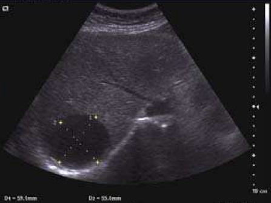

Ficha del catálogo
Quiste hepático simple
- Sistema
- Digestivo
- Modalidad
- US
- Región
- Hígado
- Dificultad
- Básico
Es una lesión benigna muy frecuente, de origen congénito, revestida por epitelio biliar y sin comunicación con la vía biliar. Suele ser un hallazgo incidental en estudios realizados por otro motivo y aumenta su prevalencia con la edad. La inmensa mayoría son asintomáticos y no requieren tratamiento ni seguimiento.
Técnica
El ultrasonido es el método ideal para caracterizarlo, ya que demuestra con claridad la naturaleza líquida de la lesión. Se explora con transductor convexo y se aumenta la ganancia para confirmar la ausencia de ecos internos, complementando con Doppler color para descartar vascularización. Cuando la lesión es pequeña o profunda y la tomografía deja dudas, la resonancia resuelve el caso por su alta señal en T2.
Qué observar
- Contenido completamente anecoico, sin ecos internos ni detritos
- Pared imperceptible o extremadamente fina, sin nódulos murales
- Refuerzo acústico posterior, con sombras finas en los bordes laterales
- Ausencia de tabiques gruesos, calcificaciones y vascularización interna
- Morfología redondeada u ovoide con márgenes bien definidos
- Número de quistes y presencia de quistes renales que sugieran poliquistosis
Hallazgos
Lesión anecoica de bordes netos con refuerzo posterior en ultrasonido. En tomografía muestra densidad de agua, entre 0 y 20 unidades Hounsfield, homogénea y sin realce tras el medio de contraste. En resonancia es marcadamente hiperintensa en T2 e hipointensa en T1, con señal similar a la del líquido cefalorraquídeo y sin realce interno ni parietal. La presencia de tabiques finos aislados es aceptable, pero los tabiques gruesos, los nódulos murales o el realce obligan a reconsiderar el diagnóstico.
Perlas
Un quiste que deja de ser simple deja de ser inocente: Contenido ecogénico, tabiques gruesos, calcificaciones, nódulos murales o cualquier realce interno exigen descartar quiste hidatídico, absceso, quiste hemorrágico o neoplasia quística mucinosa. En un quiste verdaderamente simple, el ultrasonido con adecuada ganancia y Doppler basta para cerrar el diagnóstico y no se requiere seguimiento.
Diagnóstico diferencial
- Quiste hidatídico
- Membranas desprendidas, vesículas hijas y calcificación parietal, con antecedente epidemiológico.
- Absceso hepático
- Contenido heterogéneo con pared gruesa que realza, edema perilesional y cuadro febril.
- Neoplasia quística mucinosa
- Tabiques gruesos, nódulos murales y realce (predomina en mujeres de mediana edad).
- Metástasis quística o necrótica
- Pared irregular con realce y primario conocido, frecuentemente con otras lesiones sólidas.
- Bilioma o hematoma
- Antecedente de traumatismo o procedimiento, forma no redondeada y cambios evolutivos rápidos.
Simuladores
- Vesícula biliar o vasos vistos en corte transversal
- Dilatación quística de la vía biliar, que se continúa con el árbol biliar
- Metástasis hipodensas de pequeño tamaño, mal caracterizadas por volumen parcial en tomografía
Por modalidad
- US
- Es el método más eficiente y accesible para confirmar el carácter simple y descartar contenido o vascularización
- TC
- Muestra la densidad de agua y la ausencia de realce, aunque las lesiones muy pequeñas sufren efecto de volumen parcial
- RM
- Resuelve los casos dudosos por la señal muy alta en T2 y confirma la ausencia de realce interno
Protocolo
Ultrasonido con transductor convexo y aplicación de Doppler color para descartar flujo interno (conviene subir la ganancia para verificar que no existen ecos de bajo nivel). En tomografía se mide la densidad con una región de interés adecuada al tamaño de la lesión, comparando el estudio simple y el contrastado. En resonancia se emplean T2 con y sin supresión grasa, T1 y una serie dinámica con contraste cuando se necesita confirmar la ausencia de realce.
Clasificación
No existe una clasificación de uso rutinario para el quiste hepático simple. Para la enfermedad poliquística hepática se emplean esquemas basados en el número y tamaño de los quistes y en el volumen hepático residual, que orientan las decisiones terapéuticas. Los quistes hidatídicos sí cuentan con una clasificación ecográfica ampliamente aceptada, que va desde las lesiones activas uniloculares o con vesículas hijas hasta las inactivas con calcificación total.
Errores frecuentes
- Informar un quiste como complejo por ecos artefactuales derivados de una ganancia mal ajustada
- Considerar simple una lesión quística con tabiques gruesos o nódulos, que requiere caracterización adicional
- Medir densidades falsamente elevadas en quistes pequeños por efecto de volumen parcial en tomografía

quiste hepatico anecoico refuerzo posterior lesion benigna incidentaloma higado ultrasonido